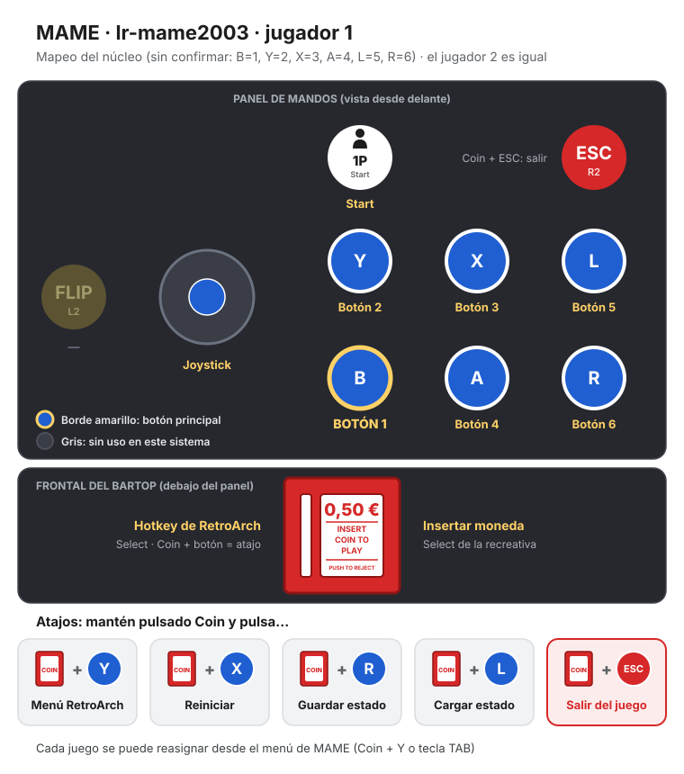

MAME (lr-mame2003)
Arabian Fight
- Año: 1991
- Desarrollador: SEGA
- Género: Beat 'em up
- Jugadores: 4 jugadores
Beat 'em up para hasta cuatro jugadores, con cuatro guerreros a elegir que luchan contra hordas de soldados y seres mitológicos, con mucho escalado de sprites del primer plano al fondo. Tiene siete fases.
Controles
Probado en la bartop (2026-11-19): los botones van como en la tabla; Y ya no hace nada. Dos botones (MAME 2003, con remapeo: B = Botón 1, A = Botón 2; Y sin asignar). R no hace nada: la recreativa solo tiene dos botones. Cada jugador tiene su propia moneda. Probado el 2026-11-17 y el 2026-11-19.
| Panel | Juego |
|---|---|
 | Dar un puñetazo · encima de un objeto: cogerlo |
| (mantener) | Defenderse |
 | Saltar |
| y en el aire | Patada en el aire |
| + | Magia (ataque especial) |
 | Empezar (jugador 1) |
 | Meter una moneda |
 | Meter una moneda y empezar (jugador 2) |
+  | Salir del juego |
El panel en MAME (lr-mame2003)


Argumento
Recopilado de internet (2026-11-16). Lo marcado con ⚠️ no está probado en la bartop.
El corrupto jeque Sazabiss ha raptado a la princesa Lurana y usa todo su poder para conquistar el mundo. Cuatro guerreros que dominan la magia viajan hasta su castillo para salvarla: Sinbat (el joven héroe; no es una errata de «Simbad»), Ramaya (la guerrera), Goldor (el forzudo, algo mayor) y Datta (un monje calvo de aspecto espiritual).
Final: ⚠️ las fuentes no lo describen; está en el capítulo «Ending» del vídeo.
Fuentes
Jugabilidad
Recopilado de internet (2026-11-16). Lo marcado con ⚠️ no está probado en la bartop.
- Tipo de juego: beat 'em up de Sega (1992; en pantalla pone 1991), placa System 32, para hasta cuatro jugadores a la vez. Se parece a Golden Axe y Streets of Rage.
- Estructura: siete fases, de Arabia a la India (ver «Guía de niveles»).
- Botones originales: tres, puñetazo, patada y un ataque especial mágico, como la magia de Golden Axe. También se puede agarrar y lanzar a los enemigos.
- Magia y objetos: los cofres y algunos enemigos sueltan objetos que dan puntos, curan o cargan el ataque especial.
- Efecto 3D: con escalado de sprites, los personajes pueden ir al fondo del escenario. Algunos ataques especiales y enemigos salen en primer plano, pegados a la pantalla (durante esas animaciones no te pueden golpear).
Botones según las guías (probado en parte el 2026-11-17)
| Recreativa | Panel | Acción |
|---|---|---|
| Botón 1 | | ⚠️ Puñetazo (atacar) |
| Botón 2 | | ⚠️ Patada o saltar |
| Botón 3 |  | ⚠️ Ataque especial (magia) |
Wikipedia habla de «puñetazo, patada y especial»; la ficha propone B = atacar y A = saltar. El orden real de los botones está por comprobar.
Fuentes
Guía de niveles
Recopilado de internet (2026-11-16). Lo marcado con ⚠️ no está probado en la bartop.
| Fase | Nombre |
|---|---|
| 1 | Pirate Ship (el barco pirata) |
| 2 | Pyramid Power (la pirámide) |
| 3 | Desert Storm (el desierto) |
| 4 | Desert Street (la ciudad del desierto) |
| 5 | Panic in the Palace (el palacio) |
| 6 | Hell on the Hill (la colina) |
| 7 | Castle of the Devil (el castillo de Sazabiss) y jefe final |
Fuentes
Objetos
Recopilado de internet (2026-11-16). Lo marcado con ⚠️ no está probado en la bartop.
| Objeto | Qué hace |
|---|---|
| Cofres | Se rompen y sueltan objetos. |
| Comida | Recupera vida. |
| Objetos de puntos | Puntos extra. |
| Objetos de magia | Cargan el ataque especial. |
⚠️ Las fuentes no detallan cada objeto.
Fuentes
Trucos y secretos
Recopilado de internet (2026-11-16). Lo marcado con ⚠️ no está probado en la bartop.
- ⚠️ No he encontrado trucos de la recreativa.
- Hardcore Gaming 101 lo considera de los beat 'em up 2D técnicamente más ambiciosos, por su paralaje y sus efectos de primer plano.
Fuentes
Longplay

Partida completa de la recreativa (43 min), de VICIOGAME Retro Games: Arabian Fight (Arcade) Complete Gameplay.
Pulsa el minuto de un nivel para ver el vídeo desde ese punto.